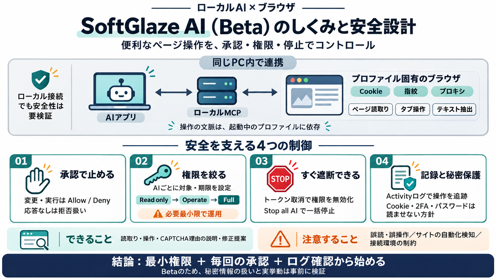

MCP security September 2026: Deadbugz + 3 server CVEs
Passive discovery across eleven sources feeds an active framework of 34 test modules covering ten MCP-specific vulnerabi…

http://127.0.0.1:PORT/mcpのように同一PC前提で連携します。page_*系でタブ操作・抽出Passive discovery across eleven sources feeds an active framework of 34 test modules covering ten MCP-specific vulnerabi…
MCP servers are exploding in enterprise use and lagging badly on security. Independent security audits conducted since 2…
## Frequently asked questions Need to ensure your MCP footprint is secure? Here are some additional questions you shoul…
Audit every MCP server before deployment. 15.4% of registry servers have no source code available (Section I). If you ca…
Data breached & why: With a single over-privileged Personal Access Token wired into the MCP server, the compromised agen…